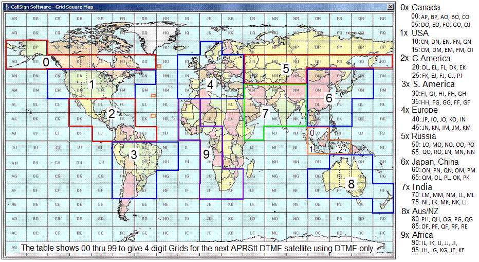
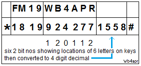

. .
. .
QIKCOM-2 - The first APRS TouchTone Satellite
Bob Bruninga, WB4APR, Student Mentor, US Naval Academy, (last name at usna dot edu)
Todd Bruner, WB1HAI, Student Mentor and Control Operator
Midshipmen students: Skinker, Segalla, Hunt, Diasordaz
A FLIGHT READY Payload looking for a Piggyback Ride.
BLOCKED FROM LAUNCH: As of mid July 2018, the QIKCOM-2 module which was attached to the eXCITe host spacecraft for over 2 years was removed from the host at the last minute. Although our IARU coordination dates back to 2014 and our Amateur Radio API Notice was submitted to the FCC over in 2016, the FCC refused to recognize it as an Amateur Satellite without it also getting NTIA Frequency Assignments because it was built by students at the federally funded Naval Academy. This despite the fact that everyone agrees that the mission is 100% amateur. That is what it was designed to be! For self training in the radio art by students learning about small satellites.
DUAL LICENSING: Since the growth of small satellites, and since the 2013 FCC notice clarifing the rules for experimental licensing of small satelites for universities, the FCC and industry has lingering concern over what constitutes an amateur satellite. So the FCC just held up all of our student project Amateur API notices since 2014 affecting the last 5 of our student's amateur radio spacecraft over this issue. Apparenlty they did not even process our PSAT API on to the ITU back in 2014 even though the satellite was launched in May 2015 and is one of the more popular Amateur Satellites on orbit to this day. They did not even advise us that they had failed to process the API, because historically, Amateur API's were exactly that. Just a notification to the FCC and in the 55 years of the Amateur Satellite Service, no satellite maker had ever received an actual written response to the API's from the FCC other than an acknowledgment of receipt.
In response to this lack of closed loop communication, the FCC recognized that it should close the loop on these amateur API's, but until they had a process, all of our satellite projects were in limbo. Meanwhie QIKCOM-1 was launched to the ISS and yellow-tagged for a year due to lack of FCC written acceptance of it as Amateur. Finally, it was dual licensed by the host spacecraft under their part 5 Experimental license and the FCC sent us the first ever acknowledgemtn of FCC amateur Licensing. But after a year on orbit awaiting paperwork, when finally deployed, the host spacecraft with the QIKCOM1 module never powered up.
Meanwhile the FCC seems to have decided that all student Amateur projects built at the Naval Academy must be dual licensed not only with the FCC, but also with either the Part-5 experimental (not possible for federal), or NTIA filing of the Host spacecraft. This effectively kills amateur satellite "rides" as this added burden on the host is just too much risk for them.
QIKCOM-2 Flight unit #2 was delivered 18 Nov 2015 to the spacecraft integrator. Unit #1 was held as a hot-backup but is still looking for a launch opportuniy once the first flight unit is launched. All we need is about 5W of power and a place to bolt onto. It contains its own deployable 19" thin wire whip cross polarized antennas that you can see here coiled up and sticking out the left end of the module.
QIKCOM-2's significant payload is the APRStt (TouchTone) relay system: Using simple radios with Dual Tone Multi-Frequency (DTMF) keypads allows many more amateur radio satellite users to experiment with space than only those with the more expensive radios with built-in SATCOM APRS modems. There have been several iterations of this APRStt system in APRS over the years since 2001, but this will be the first one in space and will help introduce amateur radio operators everywhere to this unique capability bringing APRS to any user with any walkie-talkie, not just those with APRS modems in their radios. Read more about APRStt. To use the spacecraft with your DTMF mobile or handheld all you have to do is store your callsign in DTMF memory using this handy on-line DTMF Callsign Encoder.
This QIKCOM-2 transponder was to join a number of Networked APRS transponders operating in the Amateur Satellite Service that are, or will be, on Orbit in 2016 and all will appear on the live APRS satellite downlink page and ISS downlink page:
OUTNET a global APRS channel on 3 GEO satellites!
PCsat-1 in orbit since 2001 semi-operational
ARISS on the ISS since 2007
PSAT Operational May 2015 (APRS and PSK-31 transponders)
BRICSAT-1 launched with PSAT, but insufficient power budget
QIKCOM-1 with terrestrial APRS alert beacon on ISS since Dec 2015 awaiting FCC approval for release
QIKCOM-2 with APRStt for launch Summer 2016
PSAT2 To be Launched spring of 2017
BRICSAT-2 To be Launched spring of 2017
ASTARS missions: Prior APRS missions on other spacecraft, ISS, Shuttle and MIR
. .
OVERVIEW: . The QIKcom-2 module is a senior engineering project of a group of students at the Naval Academy that has been offered a ride to space on a host satellite named eXCITe originally to be launched in late 2016. The rendering (upper right) shows how QIKCOM-2 attached to a NovaWurks universal adapter plate for rapid assembly and integration. The image at right shows how it might appear attached to a spacecraft made up of highly re-configurable modules. This eXCITe mission is a longer life mission than our previous very-brief QIKCOM-1 flight opportunity which will be deployed from the ISS and probably last only a few months or so due to its host's high drag. In contrast, QIKCOM-2 will hopefully have a several year life as it and eXCITe will be deployed at a higher altitude. Q2 was originally scheduled for a ride on the SHERPA mission, but due to delays, was moved to a PSLV launch in the Fall of 2017. This has now moved to summer 2018.
QIKCOM-2 continues the PCsat(2001) and PSAT(2015) amateur radio missions noted above containing an APRS packet radio communications transponder for relaying remote telemetry, sensor and user data from remote users and amateur radio environmental experiments or other data sources back to Amateur Radio experimenters via a global network of internet linked volunteer ground stations. The APRS transponder also includes telemetry, about the module's temperatures, power supply voltages and currents, solar array attitude and GPS position. QIKCOM-2 also adds a unique experimental DTMF (TouchTone) uplink on 145.98 MHz for users in the field who might not have access to an all-in-one integrated APRS radio.
Operations under ITU Rules: QIKCOM-2 operates under the ITU rules of the Amateur Satellite Service. Although it is flying attached to, and powered by, a host spacecraft, its mission and functions are entirely amateur radio related and fully fit within the QIKCOM ITU RULES. It is operted under the license of the control operator Todd, WB1HAI in Annapolis.
QIKCOM-2 FEATURES: Again, due to the short fuse, the QIKCOM-2 payload is an APRS digipeater similar to other APRS satellties but will add an APRStt (Touchtone) module to allow users without APRS capable radios to have the same type of APRS communications experience. APRStt uses DTMF for sending callsigns and grid square position reports and the spacecraft acknowledges the uplinks by voice response. DTMF users may also send any of 99 pre-stored messages (including all the standard ARL radiogram messages) by sending the message number. QIKCOM-2 also converts the DTMF data to a packet in APRS format on the APRS downlink so that all APRS users can also see all the APRStt users and their data also goes into the global APRS system. Here are some of the Voice Responses to DTMF uplinks:
APRStt GRID MAP Encoding: To get the GRID report into 4 digits, the map table below selects the most probable 99 grids that contain 99.99% of the world's amateur radio population. The first two letters of the GRID then become just two digits from the 00-99 table. You can see that our Maryland FM19 grid becomes 1819 in DTMF.


 DTMF Callsign Encoding: QIKCOM-2 cleverly compresses a 6 character call into only 10 digits following the 4 digit grid noted above. The first six digits of the call are simply the matching single keys for the callsign letters, EG: 924227 for WB4APR. The next 4 digits encode the 2 bit location of each of the 6 call letters on each of the 6 keys used. For example, the 6 letters of WB4APR on the 6 keys are key locations 120112. Since each location is between 0 and 3, they can be encoded in 2 bits each (powers of 4) and assembled left to right into a 12 bit binary number. To convert to decimal, take the first 2 bits times 1024, the next 2 bits times 256, the next 2 bits times 64, the next times 16, the next times 4 and the last 2 bits times 1. Then add them up and get the 4 digit decimal "key code" (1558 in this example for WB4APR). This 4 digit decimal number is your uniwue callsign key code. For those that are 12-bit-challenged, Bob Wood WA7MXZ has written an online
DTMF Callsign Encoder to do this 4 digit number for you. For shorter calls, right-pad to 6 with spaces. A space is encoded as the "0" key with the key location code of 1. The entire 4 digit Grid and 10 digit callsign report adds a "*" at the beginning and a "#" at the end for the full 16 DTMF key report.
DTMF Callsign Encoding: QIKCOM-2 cleverly compresses a 6 character call into only 10 digits following the 4 digit grid noted above. The first six digits of the call are simply the matching single keys for the callsign letters, EG: 924227 for WB4APR. The next 4 digits encode the 2 bit location of each of the 6 call letters on each of the 6 keys used. For example, the 6 letters of WB4APR on the 6 keys are key locations 120112. Since each location is between 0 and 3, they can be encoded in 2 bits each (powers of 4) and assembled left to right into a 12 bit binary number. To convert to decimal, take the first 2 bits times 1024, the next 2 bits times 256, the next 2 bits times 64, the next times 16, the next times 4 and the last 2 bits times 1. Then add them up and get the 4 digit decimal "key code" (1558 in this example for WB4APR). This 4 digit decimal number is your uniwue callsign key code. For those that are 12-bit-challenged, Bob Wood WA7MXZ has written an online
DTMF Callsign Encoder to do this 4 digit number for you. For shorter calls, right-pad to 6 with spaces. A space is encoded as the "0" key with the key location code of 1. The entire 4 digit Grid and 10 digit callsign report adds a "*" at the beginning and a "#" at the end for the full 16 DTMF key report.
DTMF Robustness: The combined 16 key combination is then stored in the DTMF memory of the users radio so that it can be transmitted in a single 3 second burst. Since the entire code is self contained, is always 16 keys, is sent at a standard speed, always begins and ends with known keys and all keys inbetween are decimal only, then any other combinations will be ignored. Also the usual failure mode of DTMF is duplication of digits or omission of digits which will be ignored by the mentioned constraints. A successful uplink will be ACK-ed by voice since the DTMF user cannot see the APRS downlink.
DTMF MESSAGES: The DTMF decoder will also accept an encoded standardized 2 digit message number (00 to 99) to select any of the 99 preloaded messages on the spacecraft. These messages are the standard ARL radiograms plus some other special ones (such as 40 for a QSO) for this satellite. To send one of these messages in the same 16 key DTMF memory use the following format. This is a 16 key DTMF string that begins with the "C" key to indicate a message, and then a 2 digit message number and then a 2 digit modifier xx, followed by the above encoded CALLSIGN. If the message is an actual ARL Emergency message, then the modifier should be 99 and the speech will include the word "EMERGENCY". If the modifer is anything over 90, then it will not say Emergency but will say TEST. If the modifier is less than 90, then the modifier will be used if called for in the message text. Here are the two DTMF Message formats:
The "C" DTMF key indicates a message. The "MM" digits indicate the two digit message number, the "xx" digits are a numeric modifier that will replace any "_" blank in the messge text. Then the remaining CCCCCCxxxx finish off the transmission with the full encoded callsign as in the grid format.. Notice that the two formats are the same except the order of MM and XX are reversed. This is to make it easier for generating messaages on the fly while still having the CALLSIGN pre-stored in a DTMF memory. In the firt case, the three keys CMM can be manually entered and then followed by the callsign memory for easily sending different messages. The second format is for rapidly entering the BXX QSO number followed by the mesage #40 and callsign in memory. See the Actual Flight list of messages and for background the standard ARL radiograms and a copy of the Maritime Emergency Codes that are also included.
Making a Contact: When you send your grid and call by DTMF the spacecraft will say "GRID FM19 from WB4APR, QSO number xx". The QSO number increments with each new station up to 99 and rolls over. To complete a contact with such a grid, send message number 40 (see the BXX format above) with the QSO number xx. The spacecraft will say W3XYZ says message number 40 QSL your QSO number xx, my number is yy" to complete the contact. Of course, an APRS copy of each of these messages will also come down on the downlink for those with APRS radios. Since the QSO number will change with each contact, you can manually enter just Bxx and then hit another DTMF memory that has the remaining portion of the message and your call 40CCCCCCXXXX# to complete the QSO for a new QSO number. With practice you can do this rather quickly. Notice that this special "B" message format is slightly different from the "C" format in that the order of the MM message number and xx modifier are reversed so that you only have to manually enter the three keys "Bxx" to send this special QSL message.
DOCUMENTATION:
Operations in the Amateur Satellite Service: The transponder on QIKCOM-2 is operated in the Amateur Satellite Service to encourage amateur radio students, educators and experimenters around the world to contribute additional satellities to this constellation on 145.825 MHz or to build interesting self motivated remote sensors suitable for the uplink channel. See our ocean or bay oceanographic data buoys for examples. This kind of Amateur Radio experimentation fits well in the ITU rules (see PSAT justification) for operating in this service and well serve our educational and outreach goals for student projects encouraging young people to be interested in Science, Technology, Engineering and Math.
. .
The QIKcom-2 System (prototype) shown above, is composed of the same Antenna-Release and Electrical Power System (EPS) board flown on QIKCOM-1 plus the new Byonics.com version of the MicroTrack-4 with 10 Watt transmitter (down-tuned to 4W) and their Micro-DTMF receiver we use to implement the APRStt functions. The larger photo is the DTMF and Speech system board using the Parallax Basic Stamp CPU translator, Speech synthesizer (Speak-Jet), and text-to-speech processor (TTS256). The labels refer to notes on the Engineering unit (shown) that need to be corrected on the Flight Unit. The image at right below shows the Engineering unit delivered 4 June 2015.
QIKCOM-2 Operations: Like all the other APRS satellites, QIKCOM-2 will support live APRS users on the global space frequency of 145.825 simplex. In addition, it will listen on 145.98 MHz for the DTMF users. The DTMF users Grids and calls will be converted to both voice and APRS grid formatted packet and combined with other APRS user packets on the 145.825 downlink. The DTMF users may also send any of the standard numbered ARL radiogram messages. All users are expected to follow the procedures in the QIKCOM-2 User Service Agreement. That is, live operation only, and APRS packets or DTMF attempts no more than once every 30 seconds (or as indicated in that document).
Narrow Band Operation Required: Unfortuantely, the DTMF VHF receiver we are using was not made for space and so it is not very tollerant of high deviation and doppler. This is a problem, but it is the only receeiver we could get on our schedule. There are several ways to mitigate this problem for DTMF users.
Global Experimental Data Channel: QIKCOM-2 is the 7th APRS data transponder in this initiative to encourage both new satellite construction in support of this experimental data channel and lower cost student remote sensor experimentation at other schools. Other APRS transponder satellites are welcome on this frequency. With luck, we may have FOUR simultaneous APRS satellites in this constellation by the time QIKCOM-2 is launched: ARISS on ISS, PSAT, QIKCOM-1, and QIKCOM-2. When we have ten such transponders in orbit we can pretty well guarantee coverage within an average of about 10 minutes almost anywhere on Earth, 24 hours a day. What a boon that will be to amateur radio experimentation and operation.